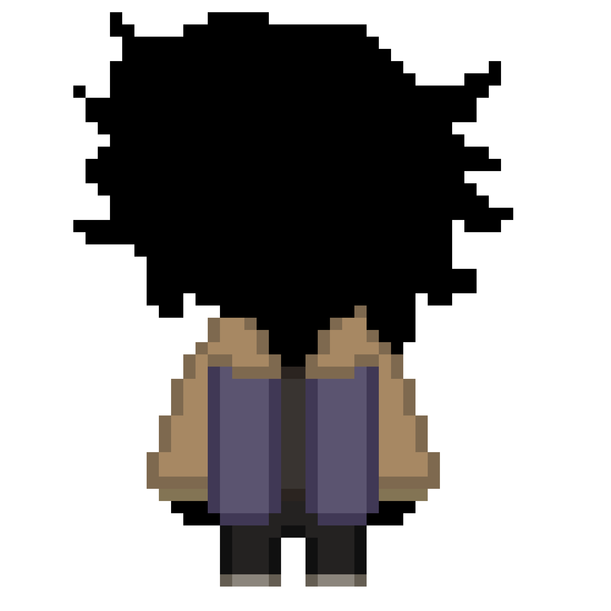
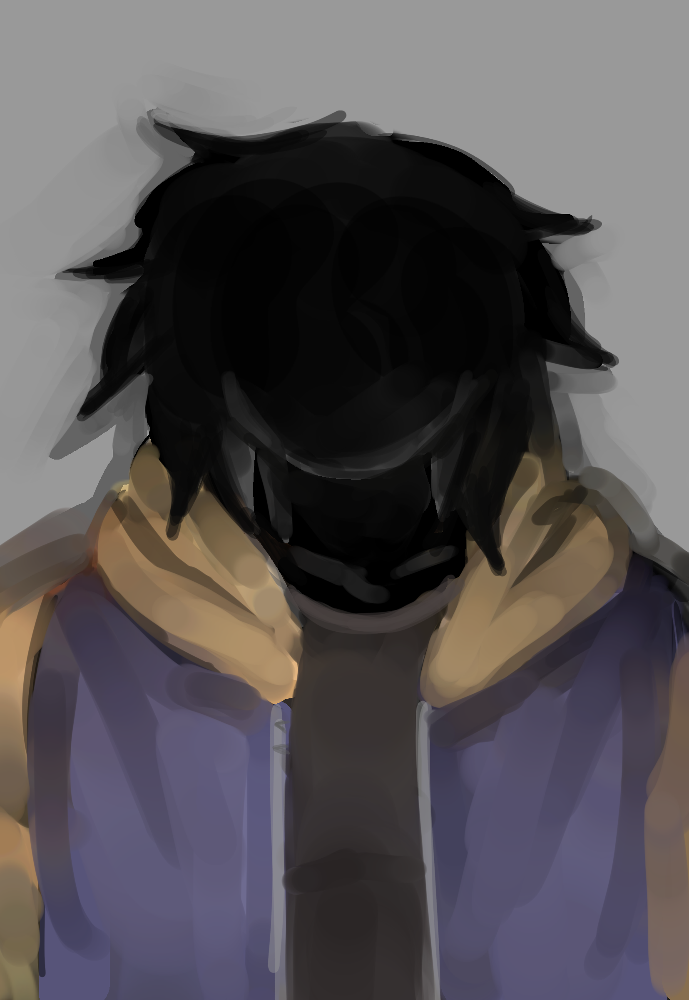
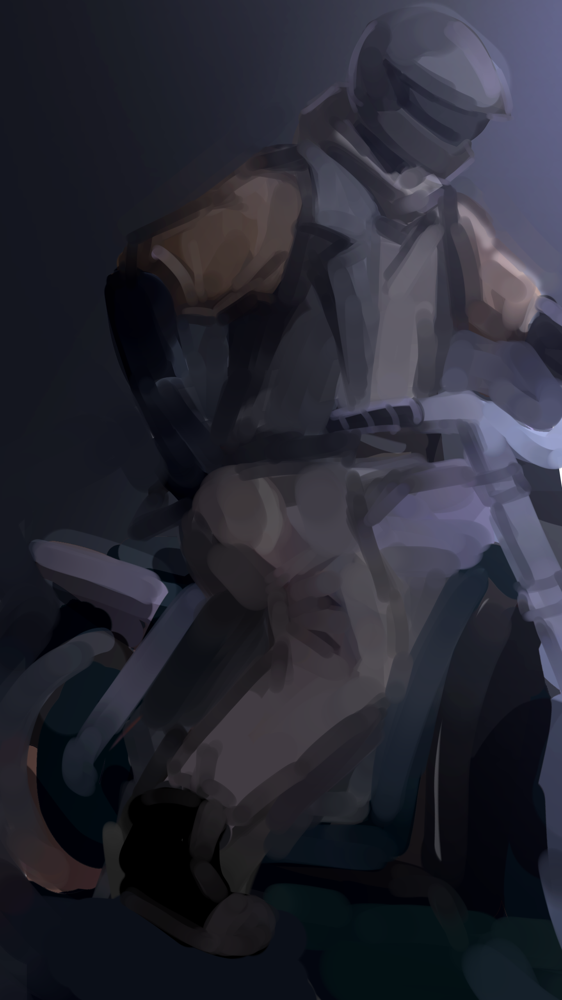
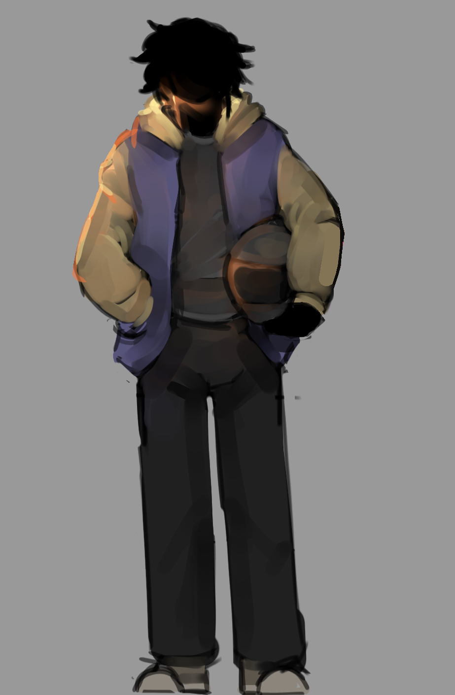

:/ДЕЛО 9
:/ДЕЛО 9

|
:/ДЕЛО 9
 |
|
 |
работает механиком на каких-нибудь гоночных соревнованиях, и то они проходят не каждый день, так что уччбу вроде как совмещает,
и очевидно работает в одной компании. как персонаж особо ничем не выделяется, он существует, можно сказать, для массовки.
периодически делится тем, что хотел бы быть за рулем тех же машин, но ему всё-таки больше нравится заниматься ремонтом.
история: он не в теме про существование других копий, знает только то, что паст ИИ и то, что есть [rx_iris], но его имени и кем он является не во всех подробностях знает... да что уж там, половину правды не знает. Более активен с друзьями из своего мира за пределами интернета. хотя после необычного знакомства с пастом начал довольно часто сидеть дома... факты: - у него есть собственный мотоцикл. он им очень гордится, довольно часто его использует. - первым, с кем он познакомился, был паст, причём случайно. паст нашёл его данные в открытом доступе на даркнете; он часто пытается доебаться до людей, пригрозить им как-то или насрать спамом, но у 9 не было никакого желания продолжать это, и в итоге их разговор медленно перерос в душевный и философский... и паст начал написывать ему просто каждый день от скуки. по сути можно считать его случайно найденной копией на просторе миров и интернета. |
- однажды паст отправил ему свидетельство о браке по интернету.
- у него есть собственная подпись. ;)
:/ галерея
